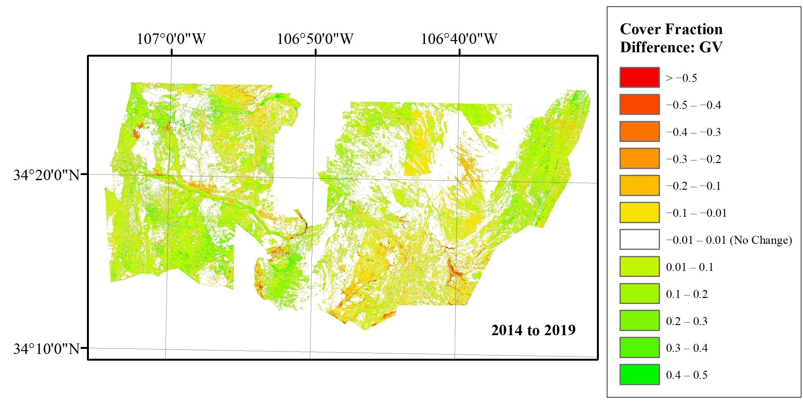

Assessing drought vegetation dynamics using MESMA

Sub-pixel analysis of land cover changes in a heterogenous environment
My master's thesis focused on using multi-endmember spectral mixture analysis, a method of characterizing relative proportions of land cover contained within individual pixels, to assess changes in vegetation communities in central New Mexico over the course of a ten year period. This is desirable because coarse resolution satellite imagery with deep temporal records such as Landsat has pixels that are typically too large to separate individual vegetation communities in heterogenous environments like the ecotone of grassland and shrubland in central New Mexico; using sub-pixel methods, we can still understand relative changes in cover between these communities, which may be important in the era of climate change. In summer 2019, I collected field spectra data of the dominant species at the Sevilleta National Wildlife Refuge over the course of six field sessions using an ASD MultiSpec 4 spectroradiometer. Using the VIPER toolset for ENVI, I curated a spectral library from these field samples and used it to train and assess MESMA models for characterizing relative cover of shrubs, grasses, and bare soil in Landsat imagery of three anniversary dates covering a 10-year period that included a major drought event.
Research Questions
- Can MESMA be successfully used to characterize relative cover of vegetation communities in semiarid grass and shrubland?
- If so, can this method be used to detect relative changes in cover?